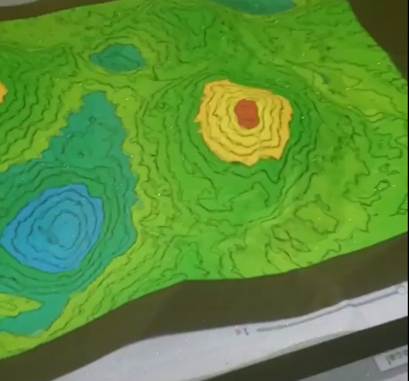

Creating an Augmented
Reality Sandbox
Adding functionality to an existing system for my college senior capstone project.

For my senior year of college at Oregon State University, most engineering students were required to complete a capstone project. I was put on a team that was tasked with adding features to an existing augmented reality sandbox system. The system was inteded to help teach students of the Civil and Construction Engineering department. A group of students my previous year had done the software work required to get the physical sandbox's basic features functional. The sandbox used an Xbox Kinect to detect the height of the sand, assign a color based on the height, and then project that color onto the sand using an overhead projector. As you moved the sand around, the colors projected would change to reflect the new heights.
Our group set out to implement new functionality that would allow a user to save a height map of the current terrain of the sandbox. That height map could then be loaded and the projector would use colors to show how the sand needed to be altered to mimic the terrain saved in the height map. Due to unforseen circumstances caused by the pandemic in 2020, we were not able to get physical access to the sandbox until much later our senior year. However, I was still able to lead my team in doing much of the preparation needed to understand the existing system and design how to add our needed functionality. Because of this, we were able to meet our goal and add a fully functional system for saving and loading terrain. Although we weren't able to add more functionality, I am proud that my group was still able to reach our intended goal in spite of the unique cirumstances. The code repository for this project can be found on my GitHub.